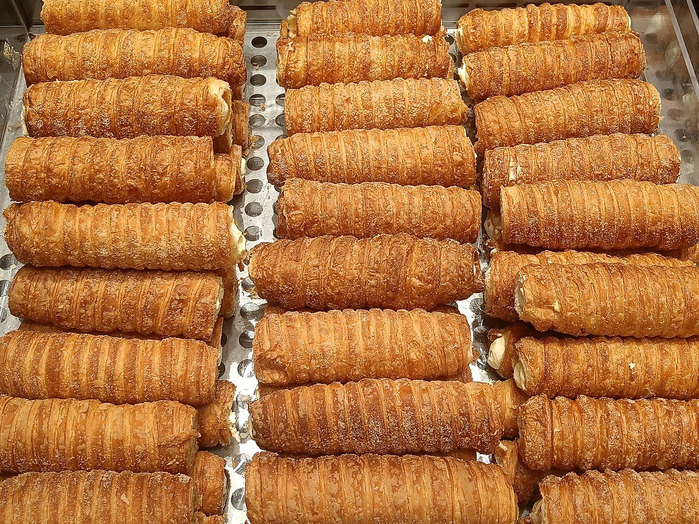

access
アクセス
宮崎市宮田町のお店へ。お出かけ前に、営業時間はInstagramでご確認ください。
- 店名
- coconoe cafe&bakery
- 住所
- 〒880-0804 宮崎県宮崎市宮田町4-4
- @cafecoconoe
Instagramを見る - 営業時間・定休日
- Instagramをご確認ください
- 駐車場・最寄りの交通手段
- ご来店前に店舗へご確認ください
地図



access
宮崎市宮田町のお店へ。お出かけ前に、営業時間はInstagramでご確認ください。
